The feel
Dreamcore takes the kind of things you might have seen as a child and, instead of making them cute or comforting, uses them to make you uneasy.1 The pictures are usually bright and open, places that seem to go on forever, such as green meadows under a blue sky, in pastel colours with soft light and a dreamlike haze.2 The TikTok creator Jordan Gretzner describes the feeling as "something that feels familiar but you can't put your finger on it".3
It has to hold two feelings at once. The creator Kayla Moore describes her own dreamcore-like video as "a little bit comforting and a little bit unsettling",3 and when 449 adults rated dreamcore images, their tastes split into warmer, comforting pictures and darker, eerie ones, and people prone to nostalgia liked both kinds more.4 Dreamcore leaves out horror in favour of an eerie nostalgia,5 and its lightness is what sets it apart from weirdcore, whose main aim is unease.2
- half-remembered
- soft
- over-bright
- childlike
- watched
- always afternoon
Where it comes from
Osamu Sato's LSD: Dream Emulator came out in Japan in 1998 for the PlayStation.6 It was inspired by a real dream journal kept by Asmik Ace employee Hiroko Nishikawa, and went on to inspire lo-fi indie horror games such as Yume Nikki.7 Kikiyama's freeware Yume Nikki (2004) follows a girl through her dreams with no plot or combat,8 and one writer calls her the forerunner of the dreamcore aesthetic.9 Dreamcore's own origins are unclear: the -core suffix emerged on social media in the late 2010s, and a major influence may be liminal space images, which gained attention online around early 2019.4 It exploded on TikTok in 2020, drawing on late-Cold War American suburbia and turn-of-the-millennium computer aesthetics,5 and in 2025 the Argentinian studio Montraluz released a walking simulator called Dreamcore.10,5
Core elements
Half-familiar places
Familiar things such as hills, houses and trees, slightly distorted and out of proportion, so that you know the place and also know it could never exist.2
Empty childhood places
Children's play centres, dead malls, long-lost toys, vacant classrooms and corridors,4 or playgrounds and shopping malls you once felt attached to.1 The original dreamcore has no people in it at all.5
Meadows under a blue sky
Bright, open spaces with no visible edge, often green meadows under a blue sky, with objects in warm colours.2 White clouds, rainbows, flowers, houses and floating buildings complete the set.5
Impossible stairs and doors
Stairs that lead nowhere or vanish into a void, long empty corridors, and doors that open onto the wrong kind of space.2 In Yume Nikki one door leads to a dozen more, each opening on a different dream.11
Staring eye motif
The eye is the style's signature motif.5 It stares straight at the viewer, yet in dreamcore it can read as neutral or even friendly, like an angel or a good spirit.2
Low-fidelity images with MS Paint text
Heavily edited photos or 3D renders,2 shared as low-fidelity images and videos,4 with text written in MS Paint.5
How to do it
Keep a dream diary
Write down dreams and childhood places before you build anything. Osamu Sato used a dream diary as the raw material for LSD's world,6 and Yume Nikki's creator Kikiyama really does keep a dream journal.8
Choose one place and empty it
Pick a place from childhood, such as a play centre, a mall, a classroom or a corridor,4 and take every person out of it.5
Place the camera at eye height
Dreamcore's first level is styled after Jared Pike's Dream Pools series.10 Pike starts every scene with the camera: a 24 or 35 mm lens at eye or waist height, placed where someone could really be taking a photograph. He composes around it, blocks the scene out in grey, then adds detail.12
Add one impossible element
Keep the hills, houses and trees recognisable but slightly distorted, then break one rule: stairs that lead nowhere, or a door that opens onto the wrong kind of space.2
Light softly and leave one area dark
Keep to pastel colours, soft light and a dreamlike haze.2 Pike lights part of each scene with sunlight and deliberately leaves an area dark, to add intrigue and invite exploration.12
Lower the fidelity and add text
Finish as a low-fidelity image or video,4 and write any text on it the way a turn-of-the-millennium paint program would set it.5 The game Dreamcore gives its 3D worlds the grain of found-footage VHS tapes.13
Leave out goals and plot
LSD has no gameplay as such: crash into a wall and you are launched into the next world.6 Yume Nikki has no dialogue or plot, only doors into more dreams.11
Cheat sheet
Do
- Build from places people really grew up in. For Chinese dreamcore the highest praise is "That's exactly how my home looked when I was a kid!"5
- Leave people out, so that the place feels common and personal to whoever is looking.3
- Keep the unease small. Kayla Moore's idea of the best horror is "just enough to play on a real fear and make someone a little uneasy".3
- Keep the surface calm. Bigos describes dreamcore's unsettling energy as deliberately hidden under a blissful outer layer.2
Avoid
- Fake blood and monsters. Moore says scary make-up or fake blood would be "a different kind of scary",3 and Dreamcore's creator wanted spaces that unsettle without any literal monsters.13
- Dark, desaturated spaces that close in on the viewer. That is how weirdcore overwhelms people, not dreamcore.2
- Showing everything. "It's really important that you can't see everything," says Pike, "because the reality is actually really boring."12
- Stopping at the look. Creative Bloq found the game Dreamcore "all aesthetic, and zero game", with no threat to avoid and no one to speak to.10
Tools and tutorials
- Dreamcore landscape in Blender
A beginner-friendly build in about 20 minutes.
- RPG Maker 2003
What Yume Nikki was made in,11 still on sale.
- EasyRPG
A free, open source player and editor for RPG Maker 2003 style games.
- Blender
Free. Jared Pike builds his Dream Pools in it.12
- Photopea
A free browser editor for photo edits and text.
Palette
Sampled from Dreamcore, LSD: Dream Emulator and Yume Nikki. Click a crayon to copy its colour. Keep to the pale ones, and let one strong colour turn up where it shouldn't.
Feel the vibe
Listen
Sato made all of the game's music himself.6 Looping, gentle and oddly cheerful.
YouTubeKikiyama made everything in the game alone, the music included.8 Thin and cold, and strangely comforting.
YouTubeThe game's own score. Listen to how calm it keeps the empty rooms.
YouTubeSlow chords, like a memory of a music box.
YouTubeNylon likens dreamcore to the feeling of a Cocteau Twins song.3 A live take, with the words still just out of reach.
YouTube
More references
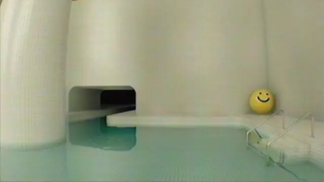
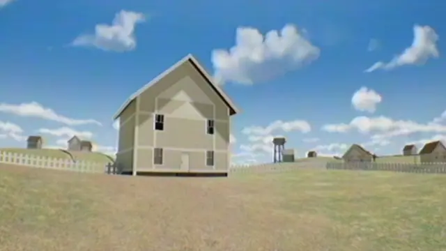
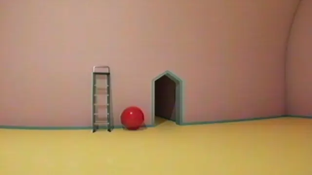
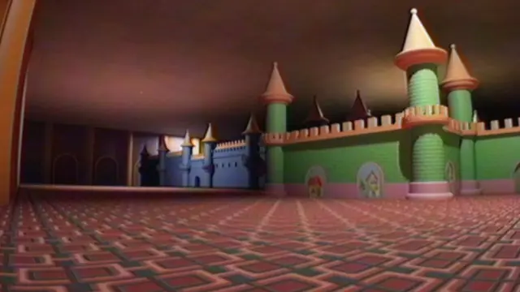
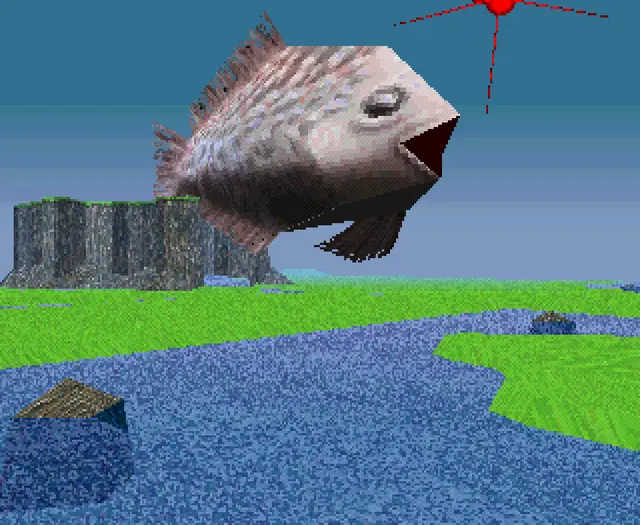
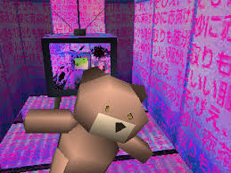
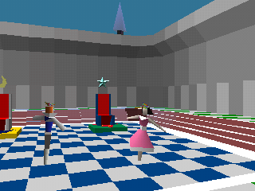
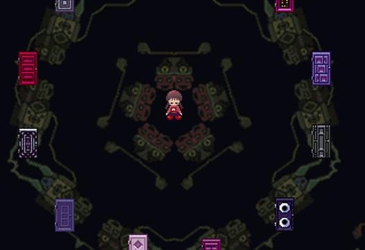
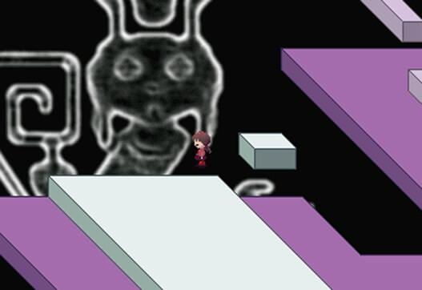
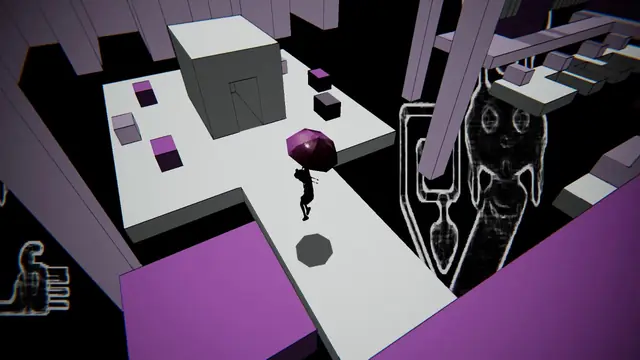
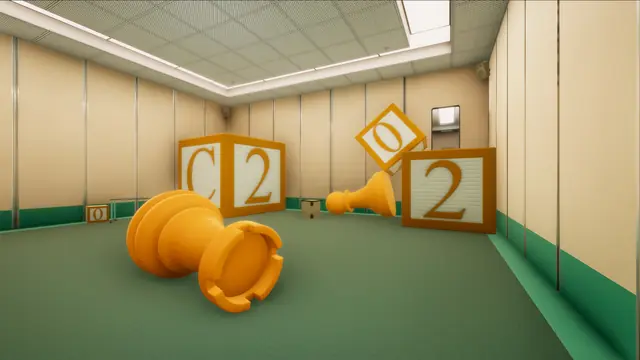
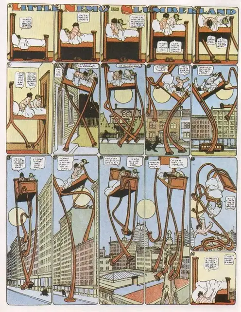
Games
- LSD: Dream Emulator
A playable dream for the PlayStation. Sato says it has "absolutely zero gameplay".6 Start here.
- Yume Nikki
Freeware made in RPG Maker 2003.8 Fans turned it into a wave of dream games of their own.11
- Superliminal
Creative Bloq names it among the games full of liminal spaces.10 Study its plain rooms and tricks of scale.
- OMORI
Bigos reads it beside Yume Nikki as a game about escaping into dreams.2 Pastel worlds with something underneath.
- Dreamcore
White-tiled pools and an endless pastel suburb,10 then a rec room of nurseries and play pens.13 The look as walkable 3D levels.
Film, art and more
- Little Nemo in Slumberland
Study how each dream builds to the last panel, where he wakes. Public domain, and a visual parallel worth studying.
- Alice's Adventures in Wonderland
Read it for the tiny door, the wrong sizes and the polite nonsense. A parallel long before the term.
- Paprika
Dreams leaking into the waking world. Watch the parade.
- Teletubbies
A baby's face in the sun over very green hills. A visual parallel, not a stated source.
- Weirdcore aesthetic
The darker sibling, built on dark, less saturated colours and closed spaces that press in on the viewer.2
Sources
- 1What is ‘Dreamcore’ and why is it all over TikTok?
- 2Dreamcore – dlaczego idylliczne obrazki wywołują niepokój? (Dreamcore: why do idyllic images cause uneasiness?)
- 3Dreamcore, Sister To Weirdcore, Is The Internet Aesthetic Packed With Uneasiness
- 4What Makes People Like Dreamcore Aesthetics? The Role of Trait Nostalgia in Preferences for Dreamcore Imagery
- 5The Dream of the ’90s Is Alive on the Chinese Internet
- 6Interview: Osamu Sato
- 7‘LSD: Dream Emulator’ – The Surreal Game and Its Spooky Conspiracy Theories 25 Years Later
- 8Yume Nikki creator Kikiyama created all of the game’s pixel art and music solo, drawing inspiration from their actual dream diary, according to RPG Maker producer
- 9I am not in your dream
- 10Dreamcore review: when style is the whole game
- 11The horrifying legacy of Yume Nikki, the homebrew game that became a phenomenon
- 12Interview: Artist Jared Pike on Dream Pools and the Allure of Liminal Spaces
- 13Cult favorite psychological horror game Dreamcore’s latest expansion, Playrooms, out today on all platforms